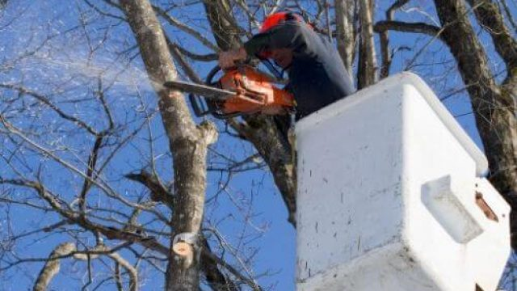

Call Us To Get Your Free Quote !
Call Now : 208-417-7993
Tree Trimming Pocatello Idaho
Proper tree trimming and pruning are essential for maintaining the health, beauty, and safety of your property's canopy. In Southeast Idaho's unique high-desert climate, seasonal timing and correct technique are critical. Trimming at the wrong time of year or using poor cuts can weaken trees, leaving them vulnerable to local pests and structural damage from heavy winter snow and ice storms.
Our local trimming specialists are trained to understand the specific needs of different tree species common to Pocatello and Chubbuck:
- Siberian Elms & Willows: These fast-growing species require structural trimming and canopy thinning. Thinning reduces wind resistance, helping these brittle trees withstand the strong seasonal winds that sweep through the Highland and Buckskin areas.
- Maples & Ash Trees: For younger Maples and Ash, we focus on developmental pruning. We establish a strong central leader branch and clear out co-dominant stems, which prevents structural splits as the tree matures.
- Mature Conifers & Pines: We carefully remove dead or low-hanging branches (limbing up) to clear sidewalks and driveways, ensuring safety and visibility without compromising the tree’s natural growth.
By evaluating every tree individually, our crew determines the perfect pruning method to keep your trees healthy, safe, and looking their best year-round.
Call us Today : 208-417-7993Tree Trimming Or Tree Removal?
Deciding whether to trim a tree or remove it entirely depends on its health, structure, and position. Trimming is highly effective for removing deadwood, thinning out overgrown crowns to let in light, and clearing branches away from roofs or power lines. This preventative care makes the canopy wind-resistant and protects against heavy winter ice accumulation.
However, removal is necessary if:
- More than 50% of the tree's canopy is dead, dying, or severely damaged.
- The main trunk shows signs of major decay, large cavities, or deep splitting.
- The roots are lifting or damaged by construction, compromising the tree's stability.
Pruning must always be done carefully. Cutting too close to the trunk (flush cuts) or removing too much of the canopy (topping) can severely stress a tree and cause decay. Our experienced team uses clean, professional pruning cuts that promote rapid wound healing and healthy new growth.
For a professional tree health evaluation and expert trimming, please contact us today.
Benefits Of Tree Trimming In Pocatello Idaho
The first benefit that we would like to emphasize when it comes to tree trimming and pruning is that it ensures the health of the trees. Especially if you have dead, loose, or possibly infected stems or branches on the tree then that might lead to it infecting the entire tree in due time.
Once these parts are removed then your tree can be 100% healthy again. Pruning young trees will not only make sure that they will develop with structural integrity but you’ll control how it grows too in terms of its structure. Overgrown trees also can’t distribute those nutrients evenly so you’re doing them a lot of good.
And of course, pruning or cutting those trees especially if they are in a commercial space make sure that they look good and match the aesthetic of the area. It should also improve the overall landscape value of the place. Trees may also serve as barriers to visual access for added privacy. So, when trimmed or pruned right, they can be a lot of things.
And lastly, trees with loose, dead, or infected parts such as their branches and stems can endanger anyone within the vicinity. Falling branches aren’t good and they might not only injure a person but damage property. Countless vehicles have been damaged by falling branches too.
A short list of the benefits of tree trimming :
- It gives your trees a better look.
- Trimming prevents the breakage of property or injury to people.
- Trimming is important because it reduces the risk of diseases such as oak wilt and Dutch elm disease, which attack the roots of trees.
- Regularly trimmed trees respond better to storms and high winds because they have been trimmed regularly before.
Tree trimming and pruning also make sure that your trees won’t be a safety hazard if there’s an upcoming storm or severe weather condition in the next few days. So be prepared, call our tree trimming service here in Pocatello, Idaho NOW! Because we are the best tree service in Pocatello .
Call Now : 208-417-7993How Experienced Are We When It Comes To Tree Trimming?
We have decades of experience with our tree trimming crew. We don’t only know how to go about removing or trimming trees but do it with a conscious effort that everyone should be safe and the tree especially when trimming them won’t be harmed in the process.
Tree trimming to us is more than just some mechanical process but it’s almost like art. Knowing what to cut, where to cut, and how to trim parts of the tree we’re working on are the keys to doing this job properly.
And of course, we do our job of making sure that any property in the surrounding area is safe and secure. We employ only the latest techniques and use only top-of-the-line tools and equipment.
Call Us Now : 208-417-7993Why Tree Trimming Is Important?
Tree trimming is important so we ensure everyone’s safety within the vicinity of the tree itself. There are a lot of accidents related to people getting injured or property getting damaged due to falling branches.
It won’t be as harmful if the tree is small but there are large trees in a lot of residential or commercial spaces. That’s why we need to check them regularly and trim them accordingly. Also, trimming helps the tree’s growth and keeps it looking good.
Call Us : 208-417-7993Why Is Tree Trimming So Expensive?
Tree trimming can be expensive but not as expensive as one might think. It only gets tricky if the tree is located in a not-so-strategic place like near a house or between commercial spaces where trimming it would require a lot of careful considerations to not damage property.
Trimming a tree is more than just cutting those branches and our experts need to carefully analyze it for its welfare. That’s why sometimes especially if the tree is large, tree trimming services can get expensive.
What Is The Difference Between Tree Trimming And Pruning?
They are oftentimes used interchangeably and that’s not a surprise for they have but one subtle difference. If you’re in the process of removing or cutting dead, loose, or infected parts of a tree then you may call that tree pruning.
If you’re in the process of cutting healthy yet overgrown parts of a tree that is then called tree trimming.
Call Us : 208-417-7993